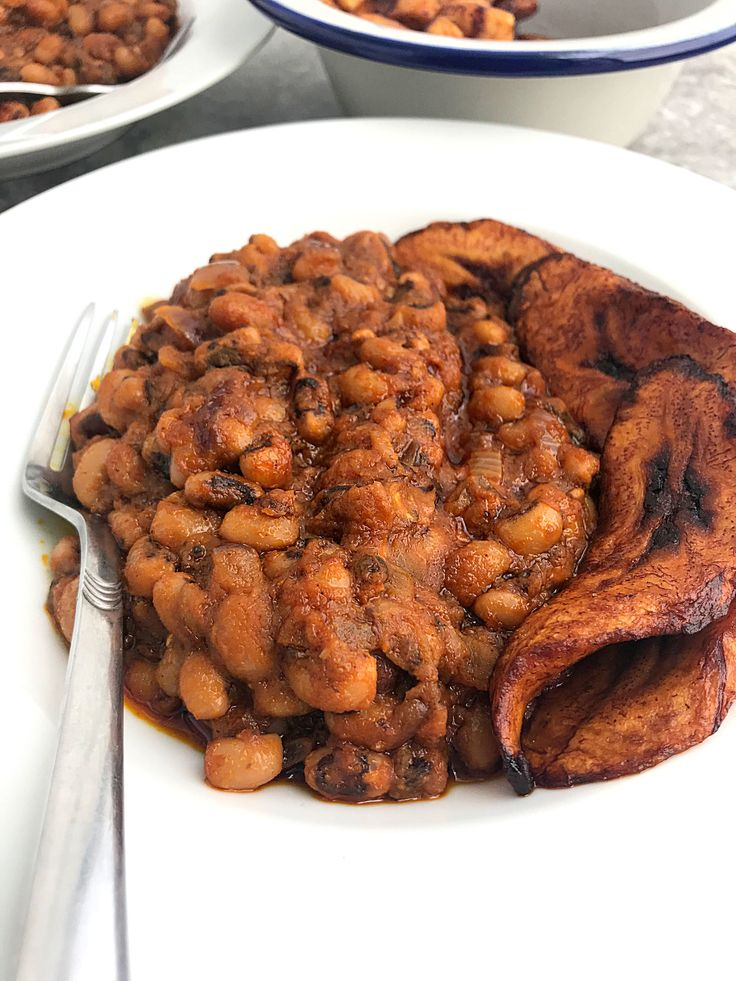

Beans

Cooked Beans
The beans known as in Yoruba, or as cowpeas (Vigna unguiculata),
are a favourite food among Nigerians, who eat them in a variety of dishes
including soups and stews or as a standalone side dish. This is great
news for Nigerians' nutritional health.
ingredients
- 300 grams Nigerian honey beans
- 1 onion
- 75 mls Palm oil
- 1 and half teaspoon Nigerian grounded pepper or 1 chopped chilli
- 2 teaspoon Salt
- 1 Knorr stock cube
Steps
There is little preparation needed when cooking
Nigerian beans porridge other than chopping the onion.
However, Nigerian beans requires a lot of water
to cook so you might want to make sure that is
readily available. Here is my Nigerian home beans
porridge recipe below.
- Place saucepan on hob and add 400mls of water and bring to boil.
- While the water is coming to boil, wash 300grams of Nigerian
honey beans under cold water and toss into the hot water.
- Add half of the chopped onion and cover the saucepan.
More often than not, the water will boil over so you
may want to cover the pan with half the lid or
leave it uncovered completely so the steam can escape.
- Cook for 40mins. Keep checking the beans
and add more water when needed. It takes
about 2litres of water to cook the 300g
of Nigerian beans but be careful not to
add too much water at a time. It takes
about 40-50mins for the beans
to get properly soft and it should look
like the this:
- Add the other half of chopped onion,
1 ½ teaspoon of Nigerian grounded pepper
or 1 chopped chilli pepper, 75mls of
palm oil, 1 Knorr stock cube and 2
teaspoons of salt.
- Add 100mls of water, stir together gently
(If you already added too much water,
just stir without adding extra water)
and simmer for 15min on low heat.
- Serve with bread or fried plantain!